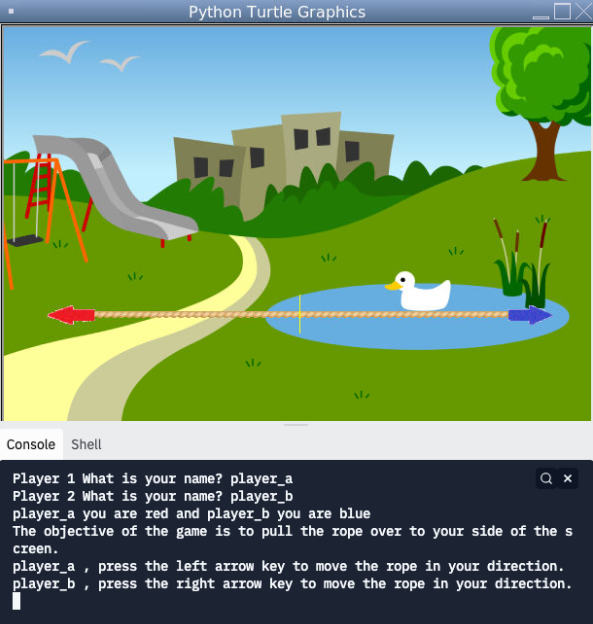

home
portfolio about metammy's portfolio
1.1.9 Project - Burger Restaurant


This project involved creating a burger based on input provided by the program user.
The user is able to select customizations for the bun, the patty, the cheese type, the condiments, and vegetables.
In addition, the user can specify the amount of vegetables they would like in their burger.
If a user enters in an invalid answer, the program shuts down and forces the user to rebuild their burger.
The program utilized the register shape function to allow for the use of complex images for the burger ingredients.
1.2.5 Project - Tug-of-War


This project was based off of the game of tug-of war.
This game requires two players, who will each attempt to pull a "rope" in a specified direction by pressing either the left or right arrow keys.
When one of the players moves the rope over to a certain threshold, the player wins the match and the game ends.
After a player wins the game, the screen displays the elapsed time of the match, the name of the winning player, and two buttons that allow the users to either exit the game or view the leaderboard.
Data abstraction was used in the creation of the leaderboard portion of the program so as to organize the code and improve its readability.
Functions were also especially helpful in defining how the users would control the rope, as well as displaying the ending screen.
Scratch Project - Dance Arena 1v1!

This project was based off of the game "Dance Dance Revolution".
This game involves pressing arrow keys according to the beat of a song in order to earn points.
When the game begins, the user can choose to read the instructions before playing, as well as decide between two songs to play to.
If the player presses the arrow keys at the right time, they will earn 100 points, as well as additional "combo" points for the correct arrows they press in a row.
After a player wins the game, the screen displays whether or not the player won the game, as well as their accuracy.
Costume changes, procedures, and relational/boolean operators were essential in making the "players" dance, moving the arrows, and grading the player's accuracy.